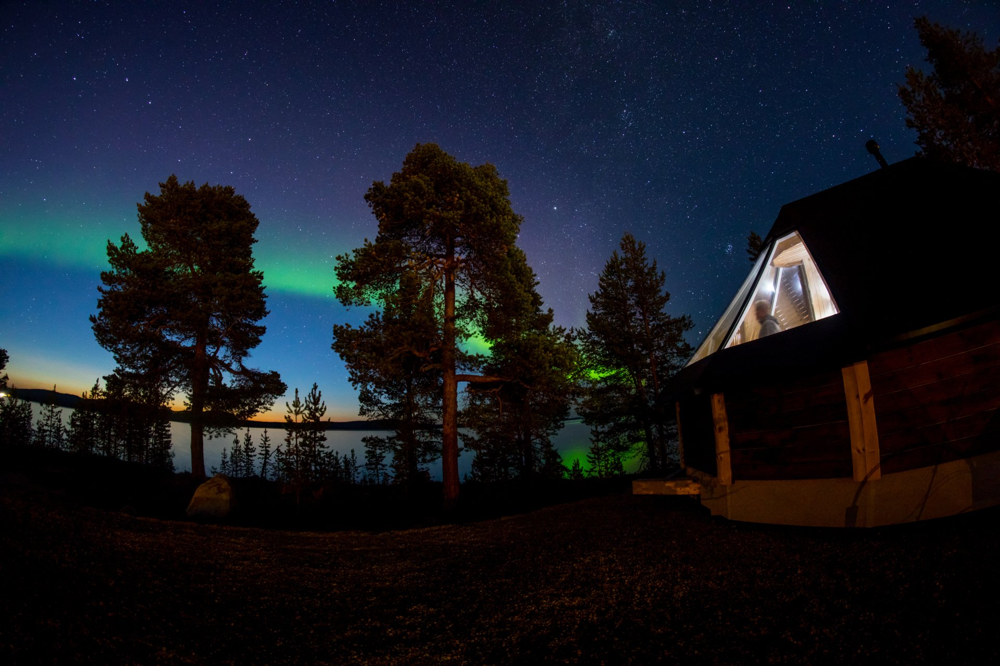

La casa engadina, entera
Una casa histórica en el pueblo mejor conservado del valle, tomada entera para el grupo durante las siete noches.

Siete noches en una casa engadina de Zuoz, entera para el grupo. Desde ahí, la semana de Navidad como la vive el valle: el trineo por el Val Fex, la terraza de Corviglia al mediodía, la hora azul desde Muottas Muragl, la mesa de Nochebuena en un gran hotel de St. Moritz y el 25 en casa, con raclette y la chimenea encendida. El regreso, recién el 26.
Cada expedición de la casa incluye dos accesos: puertas que no se compran con una entrada. El detalle es de los que viajan.
Una casa histórica en el pueblo mejor conservado del valle, tomada entera para el grupo durante las siete noches.
La mesa del 24 de diciembre en uno de los grandes hoteles históricos sobre St. Moritz, en plena temporada alta.
Traslados desde Zúrich hacia el valle. Llaves de la casa, chimenea encendida y la primera cena servida en la mesa grande de la casa.
El valle lateral más silencioso de la Engadina se recorre en trineo tirado por caballos. A la vuelta, el mercado de Navidad del valle, vino caliente en mano.
Mañana de nieve según cada uno: esquí o caminata. El mediodía encuentra al grupo en la terraza de Corviglia, sobre St. Moritz, con la Engadina entera abajo.
Al caer la tarde, el funicular sube a Muottas Muragl. Desde el mirador, la cadena de lagos del valle se apaga en azul antes de bajar a cenar.
La mañana entre las casas pintadas del casco antiguo de Zuoz. De noche, mesa en Talvo by Dalsass, en una antigua casa de Champfèr.
La noche del 24, la mesa está puesta en un gran hotel de St. Moritz. Vestirse para la ocasión; el regreso a casa es corto.
El 25 no se sale: raclette comunal, sobremesa larga y el valle blanco del otro lado de la ventana.
Desayuno sin apuro y traslados escalonados a Zúrich, según el vuelo de cada uno.